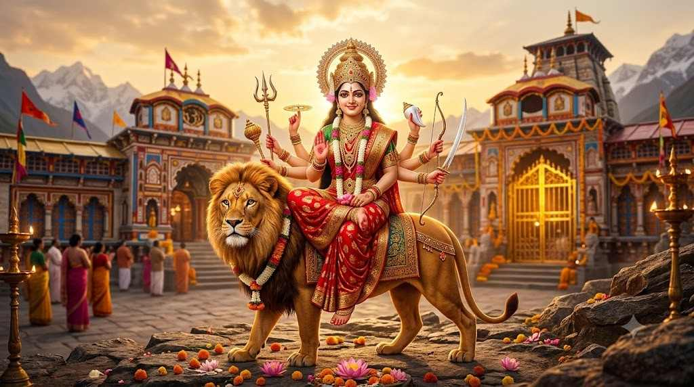

श्री दुर्गा चालीसा नित्य पाठ करने से मां दुर्गा अपने भक्तो पर प्रसन्न होती हैं और उन्हें संकट दूर करती हैं। श्री दुर्गा चालीसा, यह एक प्रकार का दिव्य स्तुति है, जिसमें मां दुर्गा की महिमा, शक्ति, और करुणा का गुणगान किया जाता है|

नमो नमो दुर्गे सुख करनी।।
नमो नमो दुर्गे दुःख हरनी।।
निरंकार है ज्योति तुम्हारी।
तिहूं लोक फैली उजियारी॥
शशि ललाट मुख महाविशाला।
नेत्र लाल भृकुटि विकराला॥
रूप मातु को अधिक सुहावे।
दरश करत जन अति सुख पावे॥
तुम संसार शक्ति लै कीना।
पालन हेतु अन्न धन दीना॥
अन्नपूर्णा हुई जग पाला।
तुम ही आदि सुन्दरी बाला॥
प्रलयकाल सब नाशन हारी।
तुम गौरी शिवशंकर प्यारी॥
शिव योगी तुम्हरे गुण गावें।
ब्रह्मा विष्णु तुम्हें नित ध्यावें॥
रूप सरस्वती को तुम धारा।
दे सुबुद्धि ऋषि मुनिन उबारा॥
धरयो रूप नरसिंह को अम्बा।
परगट भई फाड़कर खम्बा॥
रक्षा करि प्रह्लाद बचायो।
हिरण्याक्ष को स्वर्ग पठायो॥
लक्ष्मी रूप धरो जग माहीं।
श्री नारायण अंग समाहीं॥
क्षीरसिन्धु में करत विलासा।
दयासिन्धु दीजै मन आसा॥
हिंगलाज में तुम्हीं भवानी।
महिमा अमित न जात बखानी॥
मातंगी अरु धूमावति माता।
भुवनेश्वरी बगला सुख दाता॥
श्री भैरव तारा जग तारिणी।
छिन्न भाल भव दुःख निवारिणी॥
केहरि वाहन सोह भवानी।
लांगुर वीर चलत अगवानी॥
कर में खप्पर खड्ग विराजै।
जाको देख काल डर भाजै॥
सोहै अस्त्र और त्रिशूला।
जाते उठत शत्रु हिय शूला॥
नगरकोट में तुम्हीं विराजत।
तिहुंलोक में डंका बाजत॥
शुंभ निशुंभ दानव तुम मारे।
रक्तबीज शंखन संहारे॥
महिषासुर नृप अति अभिमानी।
जेहि अघ भार मही अकुलानी॥
रूप कराल कालिका धारा।
सेन सहित तुम तिहि संहारा॥
परी गाढ़ संतन पर जब जब।
भई सहाय मातु तुम तब तब॥
अमरपुरी अरु बासव लोका।
तब महिमा सब रहें अशोका॥
ज्वाला में है ज्योति तुम्हारी।
ज्वाला में है ज्योति तुम्हारी।
प्रेम भक्ति से जो यश गावें।
दुःख दारिद्र निकट नहिं आवें॥
ध्यावे तुम्हें जो नर मन लाई।
जन्म-मरण ताकौ छुटि जाई॥
जोगी सुर मुनि कहत पुकारी।
योग न हो बिन शक्ति तुम्हारी॥
शंकर आचारज तप कीनो।
काम अरु क्रोध जीति सब लीनो॥
निशिदिन ध्यान धरो शंकर को।
काहु काल नहिं सुमिरो तुमको॥
शक्ति रूप का मरम न पायो।
शक्ति गई तब मन पछितायो॥
शरणागत हुई कीर्ति बखानी।
जय जय जय जगदम्ब भवानी॥
भई प्रसन्न आदि जगदम्बा।
दई शक्ति नहिं कीन विलम्बा॥
मोको मातु कष्ट अति घेरो।
तुम बिन कौन हरै दुःख मेरो॥
आशा तृष्णा निपट सतावें।
रिपू मुरख मौही डरपावे॥
शत्रु नाश कीजै महारानी।
सुमिरौं इकचित तुम्हें भवानी॥
करो कृपा हे मातु दयाला।
ऋद्धि-सिद्धि दै करहु निहाला।
जब लगि जिऊं दया फल पाऊं।
तुम्हरो यश मैं सदा सुनाऊं॥
दुर्गा चालीसा जो कोई गावै।
छसब सुख भोग परमपद पावै॥
देवीदास शरण निज जानी।
करहु कृपा जगदम्ब भवानी॥
॥ समाप्त ॥
श्री दुर्गा चालीसा में चालीस चौपाइयों से युक्त एक भक्तिपूर्ण स्तुति है, जिसमें माँ दुर्गा की महिमा, उनके विभिन्न स्वरूपों, शक्तियों और भक्तों पर उनकी कृपा का वर्णन किया गया है। इसका पाठ श्रद्धा और विश्वास के साथ किया जाता है। माँ दुर्गा अपने भक्तों को संकटों से बचाती है इसलिए माँ दुर्गा को संकटमोचन और शक्ति का स्वरूप भी माना जाता है।
श्री दुर्गा माता केवल शक्ति की प्रतीक ही नहीं, बल्कि ममता और करुणा की भी प्रतिमूर्ति हैं । माता दुर्गा का स्वरूप अत्यंत शक्तिशाली और दिव्य माना जाता है। उनके अनेक हाथों में विभिन्न अस्त्र-शस्त्र होते हैं, जो अलग-अलग शक्तियों और गुणों के प्रतीक माने जाते हैं।
दुर्गा चालीसा में माँ दुर्गा की महिमा का वर्णन मिलता है। भक्त जब श्रद्धा और विश्वास के साथ माता दुर्गा इसका पाठ करते हैं, तो माता उनको संकट दूर करती हैं| धार्मिक विश्वास के अनुसार, दुर्गा चालीसा का पाठ संकट के समय मानसिक शक्ति और साहस प्रदान करने वाला माना जाता है।
चालीसा का पाठ केवल किसी इच्छा की पूर्ति के लिए ही नहीं, बल्कि माँ के प्रति प्रेम, श्रद्धा और कृतज्ञता व्यक्त करने का भी एक माध्यम है। नियमित पाठ से व्यक्ति में सकारात्मक विचार, आत्मविश्वास और आध्यात्मिक शांति की भावना विकसित होने की मान्यता है।
सिंह
माँ दुर्गा नारी शक्ति, साहस, धर्म और बुराई पर अच्छाई की विजय का प्रतीक मानी जाती हैं।
क्योंकि उन्हें समस्त सृष्टि की मूल और सर्वोच्च शक्ति माना जाता है।
श्रद्धा, भक्ति और एकाग्र मन से
उन्हें संपूर्ण जगत की माता के रूप में माना जाता है, इसलिए जगदंबा कहा जाता है।
इसे भी पढ़े : बजरंग बाण
इसे भी पढ़े : श्री हनुमान चालीसा
इसे भी पढ़े : शिव चालीसा